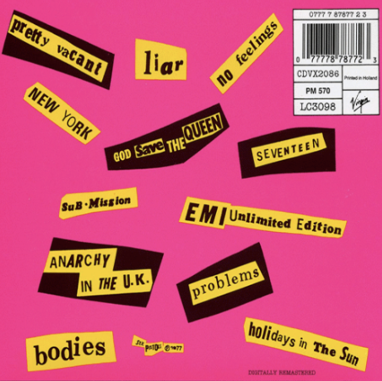
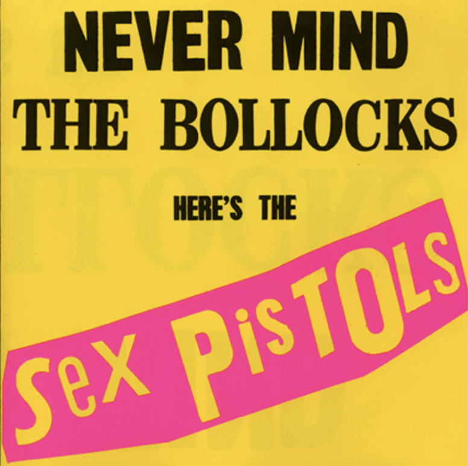

NEVER MIND THE BOLLOCKS
THE ALBUM COVER FOR “NEVER MIND THE BOLLOCKS” BY THE SEX PISTOLS SHAPED
THE AESTHETIC OF THE PUNK MOVEMENT. IT WAS DESIGNED BY JAMIE REID, AN
ENGLISH ARTIST WHO IS RESPONSIBLE FOR SEVERAL OF THE SEX PISTOLS’
ALBUM COVERS SUCH AS THE COVERS FOR “ANARCHY IN THE U.K” AND
“GOD SAVE THE QUEEN.”
THE ALBUM COVER IS STRIPPED AND SIMPLE - FEATURING ONLY THE TITLE OF
THE ALBUM AND THE NAME OF THE BAND. THE COLORS ARE BRIGHT - ALMOST GARRISH.
THE TYPOGRAPHY IS THICK AND BOLD. IT CLEARLY REFERENCES THE BIG IDEOLOGIES
OF THE PUNK MOVEMENT - ANARCHY, NIHILISM, CHALLENGING THE STATUS QUO.
IT’S CRUDE DESIGN IS A CALL OUT TO THE MAINSTREAM. THE DESIGN ALSO
SEEMS TO REFERENCE EARLIER ART MOVEMENTS SUCH AS DADAISM WITH ITS USE
OF CUT-OUT IMAGERY, PASTED TOGETHER IN A COLLAGE-LIKE FASHION. REID’S
DESIGN WAS QUICKLY ADOPTED BY COUNTLESS PUNK AND ROCK GROUPS FOR THEIR
ALBUM ART - A TESTIMONY TO THE LASTING POWER AND INFLUENCE OF DESIGN.
TO THIS DAY, THE “NEVERMIND THE BOLLOCKS” COVER REMAINS A STAPLE OF
THE PUNK MOVEMENT AND A CLEAR REFERENCE POINT IN ART AND DESIGN
HISTORY.

